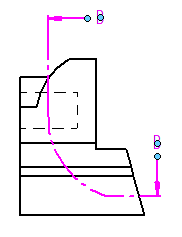

Section view and cutting plane captions
Modifying section view and cutting plane captions
You can control caption display and formatting separately for the section view and for the cutting plane line on the drawing. You can:
-
Show and hide caption text using the Show Caption button on the command bar.
-
Reposition a caption by selecting a drawing view and then dragging its caption to a new location.
-
Drag the light blue edit handles on a cutting plane line to change the length of the arrows or to move the arrows along the same vector.

-
Select a cutting plane, and then use the Caption tab (Viewing Plane, Detail Envelope, Cutting Plane Properties dialog box) to change the content and formatting of the cutting plane caption.
-
Select a section view, and then use the Caption tab (Drawing View Properties dialog box) to change the content and formatting of the section view caption.
Defining section view and cutting plane captions in the Drawing View style
The default content and appearance of section view captions, cutting plane captions, and cutting plane lines is defined in the Drawing View style that is applied to the view. In the Modify Drawing View Style dialog box, you can use the Caption Format tab (Drawing View Style dialog box) to define options such as the following:
-
The default location of the section view caption (above or below the drawing view).
-
The default location of the cutting plane label in relation to the cutting plane line and terminator.
Example:Label text placement using the Cutting Plane End option:

You can set style options in your custom draft templates to make it easier to create captions that automatically conform to your standards. For more information, see the following help topics:
How do I
Create a section viewCreate a revolved section view
Create a thin-section view
Change section view type
Scale a section view
Set rib hatching in section views
Show or hide cutting plane lines in section views
Learn more
Section viewsModifying section views
Formatting fill and hatch patterns in section views
Look up more details
Section View command (Draft environment)Section View command bar
Override Rib Hatching dialog box